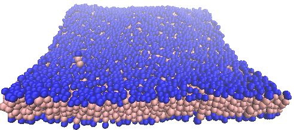
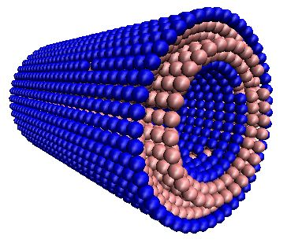
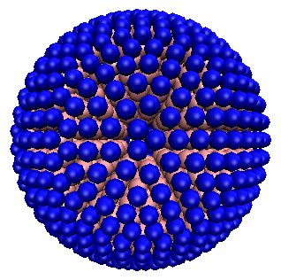
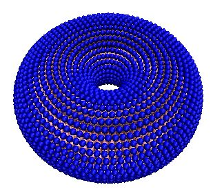
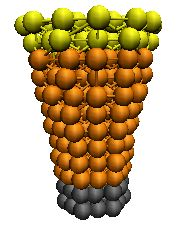
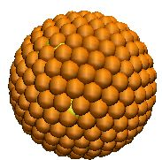
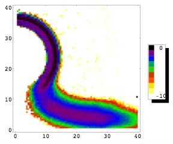

One of the main features of mbtools is the ability to easily create initial lipid configurations with interesting geometries. These include flat membranes;

cylinders;

spheres;
toroids;
and randomly distributed gases.Each of these shapes is referred to as a geometry and any number of geometries can be combined in a single simulation. Once the geometry has been chosen the user specifies the molecules which should be placed in this geometry. For example one could choose sphere as a geometry and then define two different lipids and/or a protein to be placed on the sphere. Within reason (eg size restrictions) it should be possible to use any mixture of known molecule types on any geometry. The molecule types available at present include proteins;

lipids of any length, and spherical colloids

mbtools includes several miscellaneous utility proceedures for performing tasks such as warmup, setting tabulated interactions, designating molecules to be trapped and a variety of topology related sorting or data analysis functions
The analysis part of the mbtools package is designed to wrap together all the analysis for a simulation into a single simple interface. At the beginning of the simulation the user specifies which analyses should be performed by appending its name and arguments to a variable, analysis_flags. After the analysis is setup one can then simply call do_analysis to perform all the specified proceedures. Analysis will store a data value each time do_analysis is called. Then when a call to print_averages is made the average of all stored values is printed to a file and the store of values is reset to nil.
Several membrane specific analysis proceedures have been included with mbtools. These include a fluctuation analysis which calculates the membrane stiffness based on the distribution of bending modes. Another cool analysis proceedure is the radial_density_map which calculates the density of each bead type assuming cylindrical symmetry of the system (see pic below).
